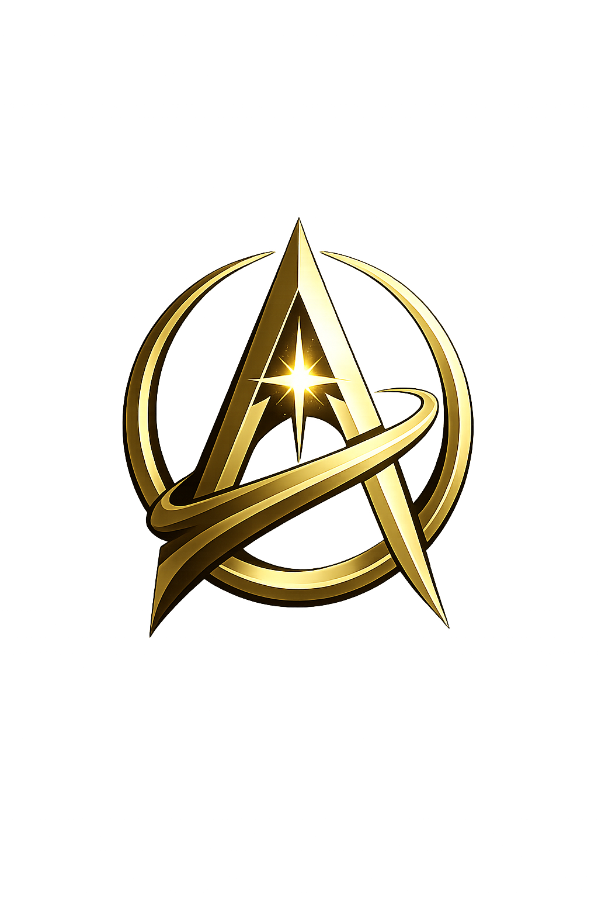

The HeliArk InstituteHumanity keeps losing lessons that were expensive to learn.
We think we can do better. A vessel for carrying human light forward.

The HeliArk InstituteWe think we can do better. A vessel for carrying human light forward.